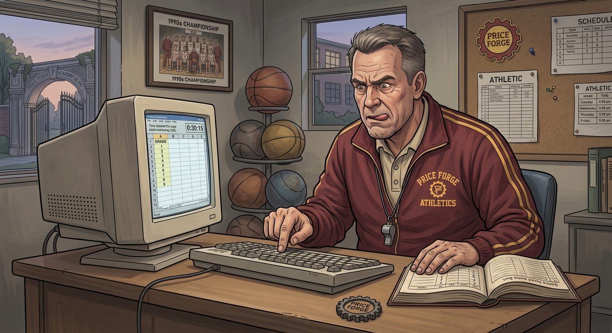

體育老師的求救信號

一、一陽指的極限
體育老師 Coach Hendricks,教了布萊克威爾快三十年書,整個人的科技造詣,大概停留在「用一根手指戳鍵盤」的水準——他管這叫「一陽指打字法」,一份簡單的成績表,他能戳半小時。
當 Wells 校長宣布「全校每一門課都要融入 AI」的隔天,Hendricks 收到教務處通知,要求體育課也要提交「AI 輔助教學數據報告」,他整個人在辦公室裡呆坐了足足十分鐘,手裡的咖啡杯都忘了放下。
「AI……數據報告……」他喃喃自語,聲音裡帶著哭腔,「我連手機的鬧鐘都要靠我外甥女幫忙設。」
Max 剛好經過辦公室送體育課的請假單,看到 Hendricks 教練一臉生無可戀地趴在桌上,忍不住停下腳步。
「教練,你還好嗎?」
「我要完了,Max。」Hendricks 抬起頭,眼眶都紅了,「校長要我交『AI 數據分析報告』,我連 Excel 都要找人教。我教了三十年體育,現在要因為不會用電腦被開除了。」
Max 看著這個平時在操場上吼得中氣十足、此刻卻可憐兮兮的中年男人,心一軟。
「我幫你想想辦法。」她拍拍他的肩膀,「我認識一個人。」
二、完美適配
Max 找到 Chloe 的時候,她正窩在圖書館角落跟 Kenji 討論上次廣播事件的「善後心得」。
「Coach Hendricks 要哭了,」Max 直接把情況說了一遍,「校長要他交 AI 數據報告,他連基本的文書處理都不太會。」
Chloe 轉頭看向 Kenji:「有辦法嗎?」
Kenji 想都沒想,直接開口:「學校去年發的那批健康手環,還在倉庫積灰吧?」
「什麼手環?」
「新生訓練發的,」Kenji 語氣平淡,「說是要監測心率體能,結果沒人真的用,因為 App 難用到爆炸,連我都懶得開。」他敲了幾下鍵盤,調出手環的技術規格,「但它的原始數據其實還在雲端存著,只是沒人去抓。寫個腳本抓下來,接一個現成的 AI 分析模型,自動生成心率趨勢、體能進步曲線、學生分組建議——半小時內能跑起來。」
Max 和 Chloe 面面相覷。
「你半小時能弄出一整套?」
「介面醜一點,」Kenji 聳肩,一如既往地面無表情,「但數字是真的。」
三、教練的感謝
三天後,Coach Hendricks 站在校長面前,手裡拿著一份印刷精美的報告——封面印著漂亮的折線圖和圓餅圖,標題寫著「布萊克威爾學院體育課 AI 智慧數據分析系統」。
Wells 校長翻閱著報告,滿意地點頭:「很好,Hendricks,沒想到你適應得這麼快啊!」
「都是……AI 的功勞。」Hendricks 額頭冒著冷汗,努力維持鎮定。
會議結束,他幾乎是逃也似地衝出校長室,直奔操場邊找到正在打籃球的 Chloe 和坐在看台上的 Max。
「妳們兩個,」他氣喘吁吁地跑過來,聲音都在發顫,「我這條老命是妳們救的。」
「小事一樁。」Chloe 抱著籃球,笑得心安理得。
「說吧,」Hendricks 感激涕零,「妳們要什麼,教練我這條命都能拿出來換!」
Chloe 眼珠一轉,笑容裡多了點狡黠:「教練,那我提個小要求。」
「妳說。」
「以後體育課,」Chloe 掰著手指,「我跟 Max 要是偶爾遲到、偶爾翹掉一節,你就當沒看見。順便——」她瞄了眼旁邊的 Kenji,「他要是想加簽體育課學分抵免,你也幫忙簽一下。」
Max 在旁邊聽得眉頭一皺:「Chloe,妳這是在要脅老師,不太——」
「這算什麼要脅,」Hendricks 卻毫不猶豫地一口答應,語氣爽快得驚人,「妳們救了我的飯碗,這點小忙算什麼!成交!」
Max 話說到一半被打斷,愣在原地,一時不知道該接什麼。
Chloe 朝她挑了挑眉,一臉「妳看,人家自己樂意」的表情。
四、離譜的成績單
期中結算的那天,教務處的公告欄前擠滿了學生。
Chloe 的成績單,堪稱一場災難美學的展覽——化學差點掛科,歷史踩在及格線邊緣瑟瑟發抖,唯獨體育課那一欄,分數高得離譜,旁邊還特別註記著「校隊儲備特長生,建議列入年度體育獎學金候選名單」。
「這……」教導主任拿著成績單,一臉困惑地翻來覆去看了三遍,「Price 同學的體育表現,已經超過我們往年任何一屆的紀錄了?」
沒有人知道,那份漂亮的「AI 智慧數據分析系統」報告裡,關於 Chloe 的那部分數據,被 Kenji 用了一個他自己都說不清道不明的演算法邏輯「稍微優化」過——反正原始數字本來就沒人看得懂,調高幾個百分點,誰也查不出來。
Wells 校長親自把 Chloe 叫進校長室,態度罕見地謙遜。
「Price 同學,」他清了清喉嚨,語氣裡帶著一絲少見的誠懇,「說實話,以前我對妳的印象不太好。但看到這份數據報告,我得承認,我看走眼了。妳在體育方面的天賦,遠遠超乎我的想像。」
Chloe站在他面前,努力繃住臉不笑出來:「謝謝校長賞識,我會繼續努力的。」
走出校長室,她整個人幾乎要笑抽過去,一把揪住守在門口的 Max。
「妳聽到了嗎?他說『看走眼了』!」
Max 叉著腰,努力擺出一副要教訓人的表情:「Chloe Price,妳這是徹頭徹尾的學術造假,妳知道嗎——」
話還沒說完,她自己先繃不住笑了出來,一手捂著嘴,肩膀抖個不停。
「妳看妳,」Chloe 得意地戳戳她的臉頰,「還想教訓我?」
「我是說真的——」Max 又笑又氣,「這事要是被查出來——」
「查什麼查,」Chloe攬過她的肩膀,一臉沒心沒肺,「原始數據都被優化過了,誰查得出來。走吧,慶祝一下我這輩子第一次當『特長生』。」
五、隔天的報紙
隔天,鎮上報紙又出現了 Wells 校長的照片,這次他站在操場中央,身後是那份印著漂亮圖表的體育數據報告,標題寫著:
《慧眼識英才:布萊克威爾學院校長 AI 選才計畫奏效,問題學生逆襲成體育特長生典範》
內文洋洋灑灑寫著校長「不拘一格降人才」的教育理念,還有一段引述:「Wells 校長表示,這正是 AI 賦能教育的最佳例證——科技讓每一個孩子的潛力,都能被精準看見。」
Chloe 把報紙貼到 Warren 家客廳的牆上,跟上次那份廣播事件的剪報並排掛著,像是某種戰績展示牆。
「這面牆,」她退後兩步,滿意地欣賞著自己的「傑作」,「我要叫它『校長的偉光正紀念角』。」
Kenji 從沙發上抬起頭,難得地扯了扯嘴角,算是一種笑:「妳這學期靠我,已經欠我兩次人情了。」
「行,」Chloe 大方地擺擺手,「下次跑團,我讓妳先選座位。」
「這聽起來不太對等。」
「愛要不要。」
客廳裡響起一片鬨笑,Max 靠在門邊,看著這幅荒誕又溫暖的畫面,無奈地搖搖頭,終究還是笑了出來。